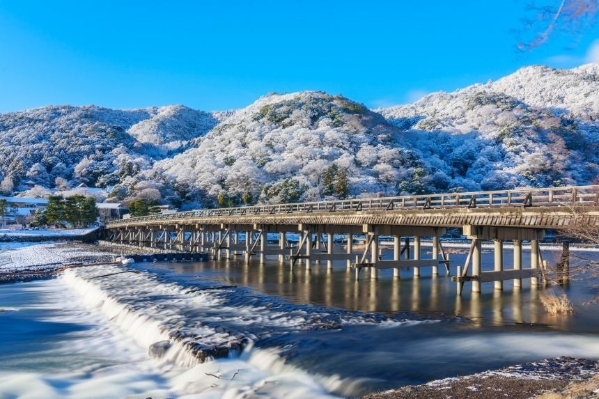
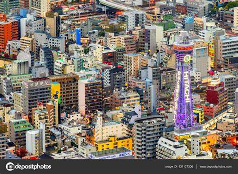

Japan has always fascinated me with its rich culture, advanced technology, and breathtaking scenery. As someone who enjoys anime, Japanese literature, and traditional arts, visiting Japan is a dream come true. I want to experience both the modern and historical aspects of the country, from the bustling cityscapes of Tokyo to the serene temples of Kyoto.
One of the main reasons I want to visit Japan is to explore Akihabara, the famous district for anime, manga, and gaming. As a fan of Japanese pop culture, I would love to visit anime-themed cafes, browse through stores filled with collectibles, and immerse myself in the vibrant atmosphere. I also want to see the life-sized Gundam statue in Odaiba, which is an iconic representation of Japan's influence on the world of anime and robotics.
Another place I want to visit is Kyoto, known for its beautiful temples and traditional streets. I would love to walk through Fushimi Inari Shrine, with its thousands of red torii gates creating a breathtaking path through the forest. Visiting Kinkaku-ji, the Golden Pavilion, would also be a dream, as it is one of the most stunning temples in Japan. Experiencing a traditional tea ceremony and wearing a kimono while strolling through Gion, the historic geisha district, are also on my bucket list.
Aside from the cultural aspects, I am also eager to try authentic Japanese cuisine. Sushi, ramen, takoyaki, and wagyu beef are just some of the dishes I want to taste. Visiting Osaka’s Dotonbori, a famous street filled with food stalls and neon lights, would be a must.
Lastly, I want to visit Hokkaido during winter to experience the Sapporo Snow Festival. The magnificent ice sculptures and the winter wonderland scenery would be a magical experience. I also want to relax in an onsen, or hot spring, in Hakone or Beppu, enjoying Japan’s natural beauty while soaking in warm waters.
Japan offers a perfect blend of tradition and modernity, making it a fascinating place to explore. From anime culture to historical temples, from delicious food to scenic landscapes, visiting Japan would be an unforgettable experience that I truly look forward to.
Japan is a dream destination for students passionate about its rich culture and literature, offering iconic landmarks that enhance the experience. The serene Togetsukyo Bridge in Kyoto, famously featured in Detective Conan: Crossroad in the Ancient Capital, provides an inspiring setting for reflecting on classical Japanese poetry and literature. Walking along this historic bridge, students can immerse themselves in the same atmosphere that has influenced countless writers and artists throughout history.
Meanwhile, the Tsutenkaku Tower in Osaka, which played a key role in Detective Conan: The Raven Chaser, symbolizes the blend of tradition and modernity, much like the evolution of Japanese storytelling from The Tale of Genji to contemporary manga. The tower stands as a beacon of innovation and history, reflecting Japan's ability to preserve its cultural essence while embracing new narratives and forms of expression.
For those who admire the works of authors like Haruki Murakami, a visit to Ebisu Garden Place in Tokyo—a location featured prominently in Detective Conan: The Private Eyes' Requiem—creates a tangible connection to Japanese literary masterpieces. This sophisticated urban space, known for its elegant architecture and cinematic significance, offers students a place to reflect, write, and draw inspiration from the vibrant literary world of Japan.
Go to top
{kind=link}
{kind=link}
{kind=link}
{kind=link}
{kind=link}